Co kde stálo
Poloha všech domů pochází z GIS vrstvy projektu, která je vektorizací historického plánu města Mostu z roku 1938 (budovy ve starém Mostě, Statutární město Most). Kulová v ní vede jako ulice č. 24 s dvanácti budovami: na severní straně 260, 261, 262, 263, 264, 111, 265 a 266, na jižní straně 258, 1608, 1712 a 257. Nárožní 267 GIS přiřazuje k Minoritské, domy 259 a 154 ke Školní. Kliknutím na zelený dům v mapě otevřete jeho stránku.
Co o ulici říkají archivní karty
- Karta k fotografii ze schodů (kolem roku 1968, J. Baldž) popisuje „pohled do horního ústí Kulové ulice ze schodů za starou školou čp. 150–153 v ul. Dobrovolců“; schody vedly do Rooseveltovy ulice a jmenovaly se „Zwinger steige“.
- Tatáž karta vidí „protilehlý rohák čp. 260“, vpravo dům 259 „a níže uličkou řadu 258, 1608 a 1712“ a za ní „zídku s vraty do zahrady čp. 257 Šmeralovo nám.“ Je to jediný archivní doklad domu 1712.
- Podle stejné karty na prostranství vedle schodů „kdysi stály domky pod hradbami, počínaje čp. 154 + 267, zbořené okolo r. 1954“. To je v rozporu s polohou čp. 267 v GIS na nároží s Minoritskou; viz Rozpory.
Databázová oblast „Kulová“ je širší než ulice
Oblast Kulová v databázi Libuše obsahuje 26 struktur. Čtrnáct z nich jsou domy této ulice a nároží (čp. 1712 v databázi chybí). Dalších dvanáct leží podle GIS v sousedních ulicích nebo daleko od ní; jejich přílohy jsme načetli a prohlédli, ale modelovány nejsou:
| Čp. | Ulice podle GIS (plán 1938) | Přílohy |
|---|---|---|
| 230 | K jatkám, Na valech | 3 |
| 239 | Na valech | 1 |
| 240 | Na valech | 1 |
| 241 | Rozmarýnová | 1 |
| 242 | Rozmarýnová | 1 |
| 253 | U jeptišek | 1 |
| 254 | U jeptišek | 3 |
| 255 | U jeptišek | 3 |
| 256 | 3. náměstí | 3 |
| 454 | v GIS není | 2 |
| 545 | Eliášova | 5 |
| 1721 | Vtelenská cesta | 9 |
Odkud jsou prameny
Databáze Libuše projektu MOST
U všech 26 struktur oblasti Kulová jsme 18. 10. 2026 načetli seznam příloh, pouze pro čtení. Celkem 154 příloh: černobílé fotografie, archivní karty, pohlednice, stavební plány a jejich odvozeniny (kolorované snímky, rektifikované průčelí FRONT). Sdílené snímky, například cp_261,262,263_001 nebo cp_111,154,265,266,267_001, visí u více domů. Každou přílohu jsme otevřeli; náhledy jsou na stránkách domů a seznam s kontrolními součty SHA-256 v zprávě.
Stavební plány
Kulová má na rozdíl od mnoha jiných ulic skutečné výkresy: řezy a půdorysy čp. 261 z roku 1889, plán čp. 259 z roku 1871, popsaný list čp. 264 z roku 1887, projekt průčelí čp. 262 z 90. let 19. století a jeho plán z roku 1940 v měřítku 1:100 se situací ulice, plán čp. 263 z roku 1910, projekt čp. 1608 z roku 1908 a zaměření ze 60. let. Plány dvorních objektů (258, 263) nejsou doklad uličního průčelí. Ručně kreslený plán střech bloku 260–263 dokládá hřebeny a valby.
Fotografie a karty
Hlavní obrazové prameny jsou snímky řady 261–263 z výšky, pohled ze schodů ze Školní (kolem roku 1968) a fotografie z roku 1969 na severní řadu 111–264 a 111–267. Ručně psané texty karet určují, co snímek ukazuje a kdo jsou sousedé.
Odvozeniny
Kolorované snímky a rektifikovaná průčelí (FRONT) v databázi jsou rekonstrukce, ne prameny. Slouží jako podklad textur; o tvaru, nápisech a poškození rozhoduje původní černobílá fotografie.
GIS a terén
Polohy, natočení a šířky průčelí jsou z GIS vrstvy (vektorizace plánu 1938, místní souřadnice EPSG:5514). Výšky budov v GIS jsou jen náhodný zástupný údaj a historický výškopis neexistuje: výšky domů odhadujeme z plánů a fotografií a podélný sklon ulice (2 % k západu) je hypotéza podle fotografie.
Jak vznikla geometrie
- Rešerše plánů a identita. Pro každý dům jsme otevřeli všechny přílohy, i ty, které se zdají nepodstatné (i vnitřní půdorys ukazuje vnější obrys domu). Pořadí domů v severní řadě jsme určili porovnáním šířek parcel v GIS s pořadím a poměry domů na fotografiích; dřívější práce měly řetězec 263–267 posunutý o jeden dům.
- Poloha v ulici. Z GIS půdorysu je průčelní hrana, natočení a obrys domu; registr ulice
street_layout_gis.jsondrží polohu všech domů. - Plán domu.
geometry_plan.jsonpopisuje průčelí, otvory, římsy, parapety, frontony, vikýře, střechu a seznam hypotéz. Střecha prochází samostatnou kontrolou proti plánu střech nebo řezu (u 1608 tak vyšla najevo chybná přední valba). - Stavba v Blenderu 4.5. Parametrický builder bez okna vyrobí BLEND a GLB. Otvory jsou skutečné niky, vikýře otevírají hlavní krytinu, frontony 262 mají patu, pole, věnec a středový článek.
- Registrace k fotografii. U 262 jsme osy a výšky oken posunuli na přijatý barevný FRONT a ověřili na původní černobílé fotografii (varianta G: geometrie se přizpůsobí doložené textuře).
- Kontrola. Audit sítě (uzavřenost, orientace, překrývající se plochy, průniky domů), test zkolabovaných UV, rendery každého otvoru zepředu a z obou stran, střešní rohy a clay. Střešní otvory navíc testuje 240–270 paprsků, zda v nich není plocha hlavní střechy.
- Sestava ulice. Domy, chodníky, obrubníky, vozovka a mobiliář 60. let (lavice, koše, sloupy s dráty, značka, konzolové lampy); plakátový sloup z doby kolem 1900 je samostatný objekt
*_EPOCH1900.
Pracovní složky: F:\MOST\output\kulova_5houses_claude_G_2026-10-16\ (domy), kulova_street_claude_2026-10-16\ (ulice), kulova_geo_qa_claude_2026-10-17\ a kulova_geo_qa_claude_2026-10-18\ (opravy geometrie a UV, aktuální sestava r13).
Domy ulice
Severní strana od Školní: 260, 261, 262, 263, 264, 111, 265, 266 a nárožní 267 u Minoritské. Jižní strana: 154 a 259 u Školní, pak 258, 1608, 1712 a 257.
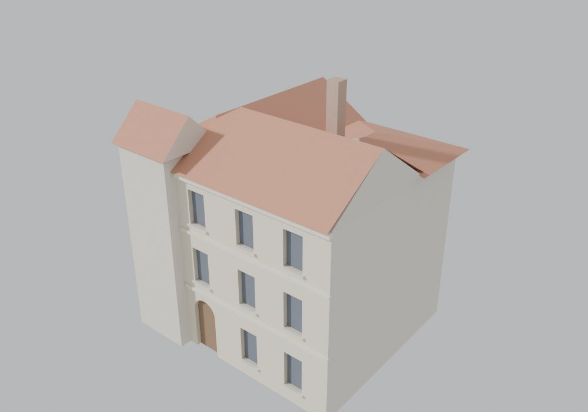
nárožní dům s arkýřem
severní strana · 11 příloh v databázi · revize r5
zatím bez textur
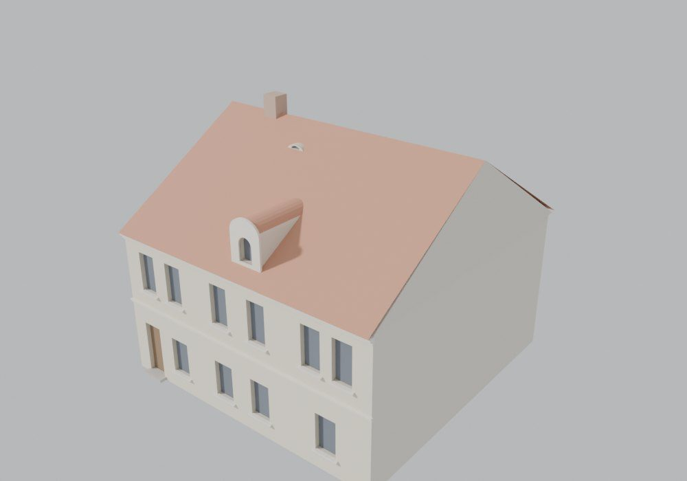
dvoupodlažní dům s barokním vikýřem
severní strana · 11 příloh v databázi · revize r5
Codex: pracovní textury na starší geometrii, čeká na převázání na r5
dům Okresní nemocenské pokladny
severní strana · 24 příloh v databázi · revize r6
Codex: hotové na revizi r5 (vzhled schválen), čeká na převázání na r6
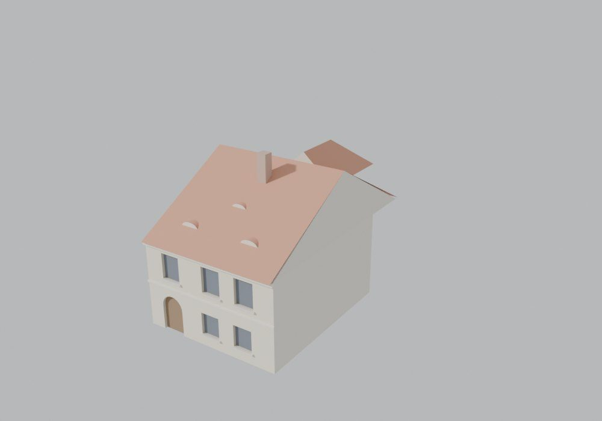
nízký dvoupodlažní dům
severní strana · 16 příloh v databázi · revize r3
zatím bez textur
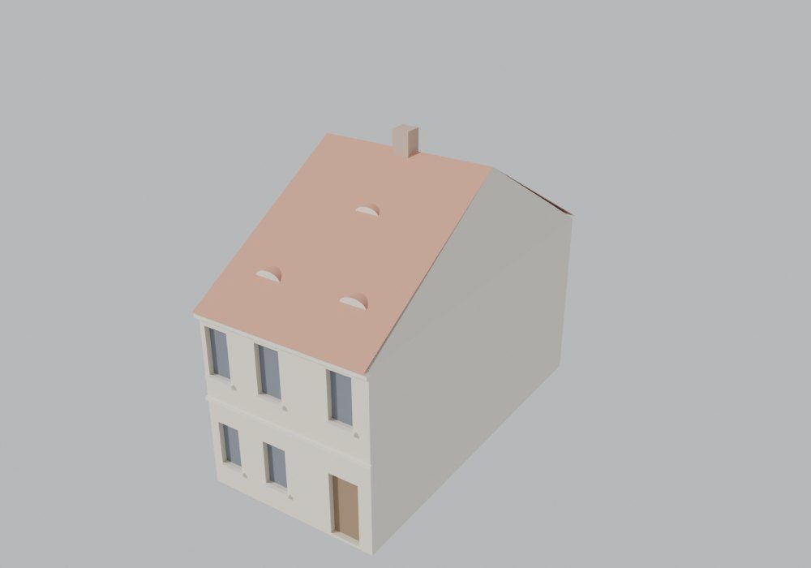
úzký dům s vraty
severní strana · 8 příloh v databázi · revize r2
zatím bez textur
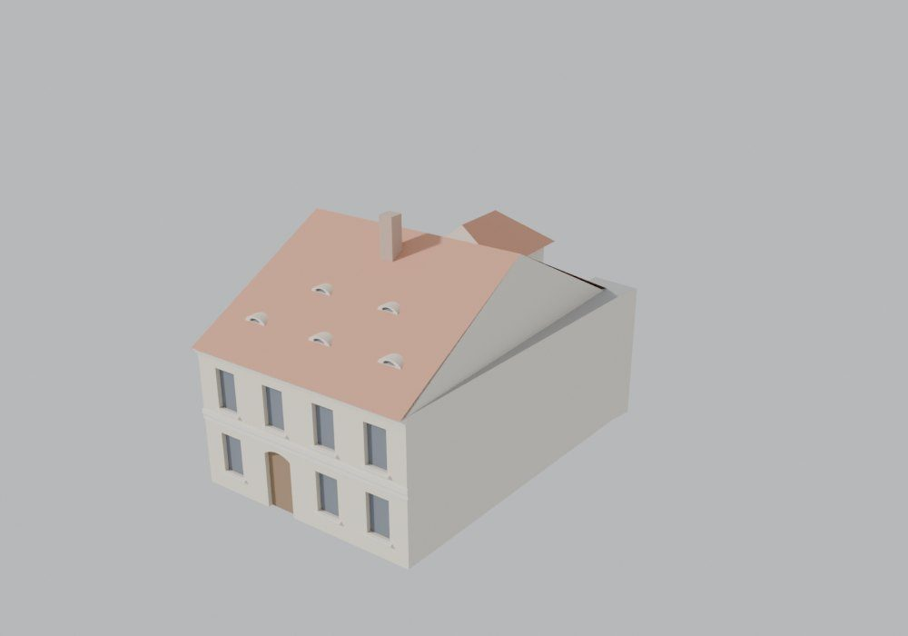
Lutherhaus
severní strana · 7 příloh v databázi · revize r6
Codex: pracovní textury na starší geometrii, čeká na převázání na r6
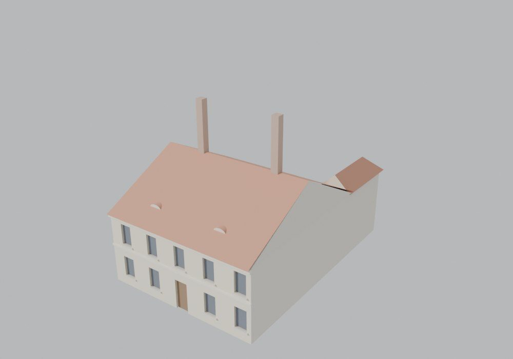
tmavý dvoupodlažní dům
severní strana · 5 příloh v databázi · revize r4
zatím bez textur
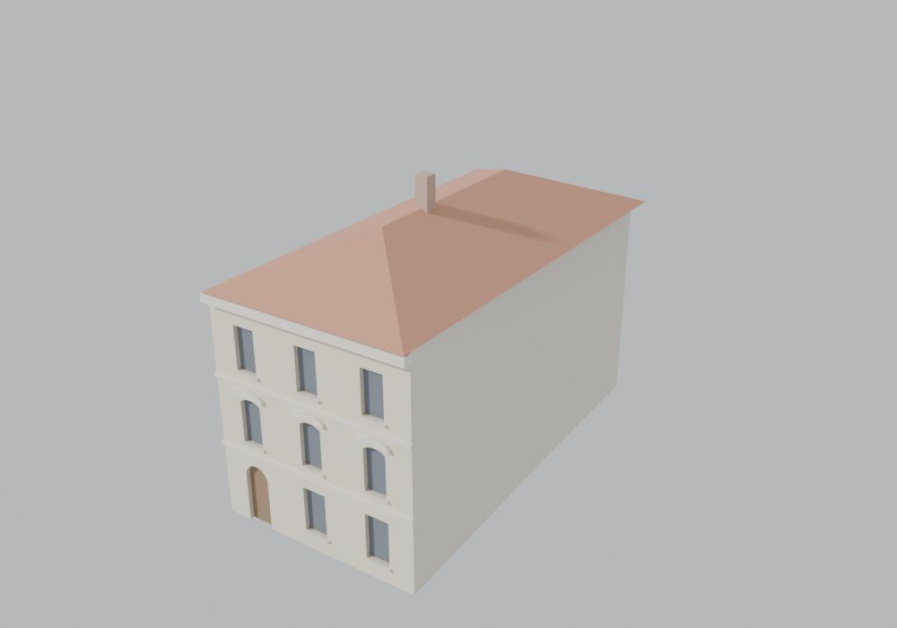
zdobený třípodlažní dům
severní strana · 5 příloh v databázi · revize r4
zatím bez textur
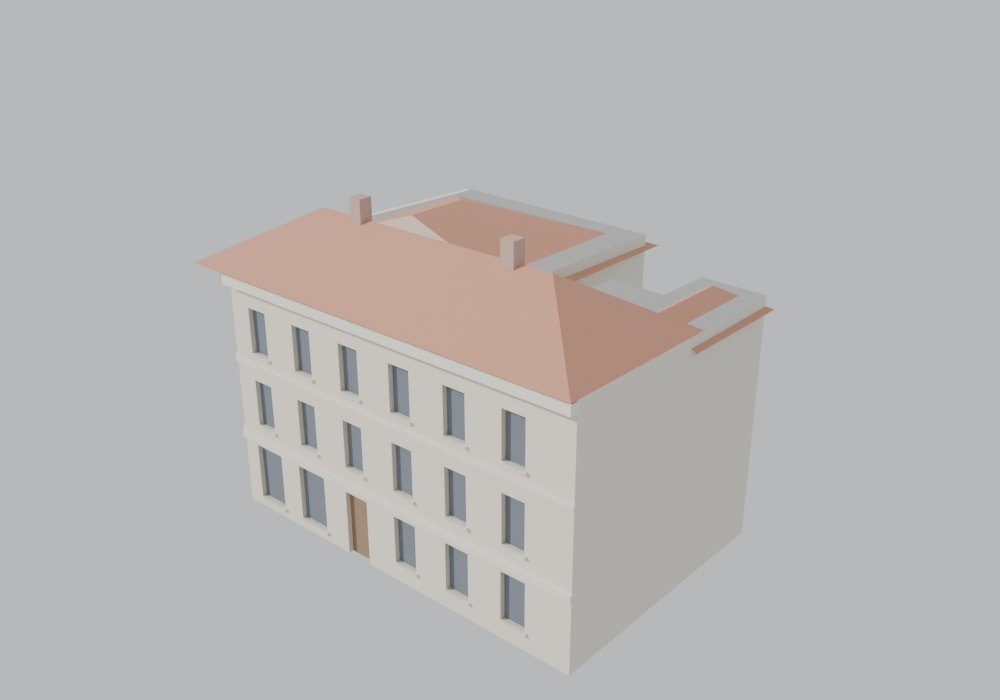
nárožní dům s obchodem ZBRANĚ · STŘELIVO
severní strana · 6 příloh v databázi · revize r4
zatím bez textur
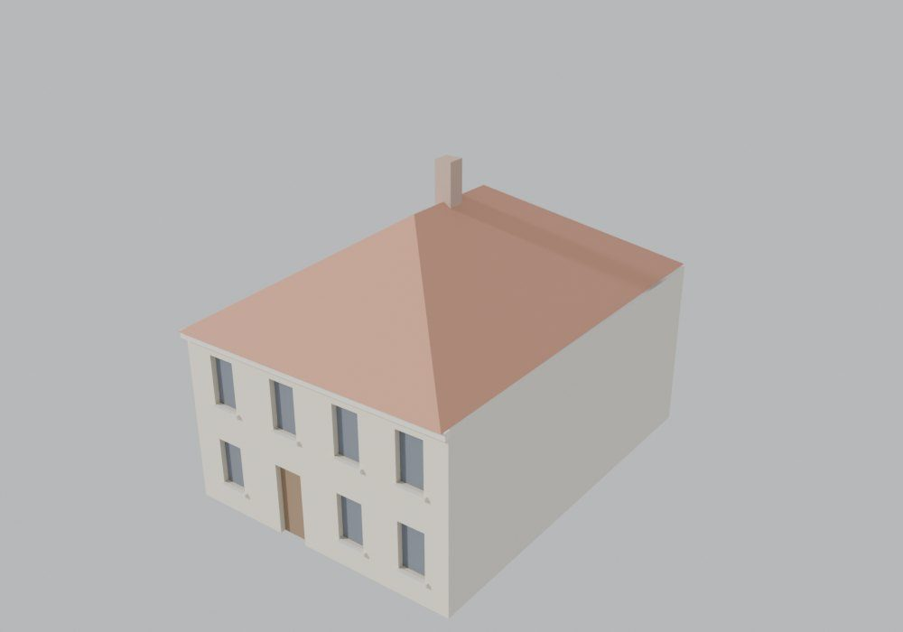
dům do Školní (bez pramene)
jižní strana · 2 příloh v databázi · revize r2
zatím bez textur
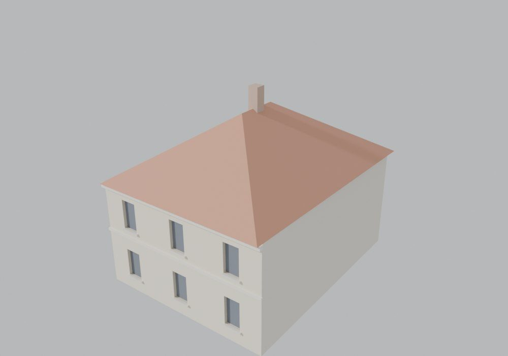
nárožní dům Kulová × Školní
jižní strana · 6 příloh v databázi · revize r5
zatím bez textur
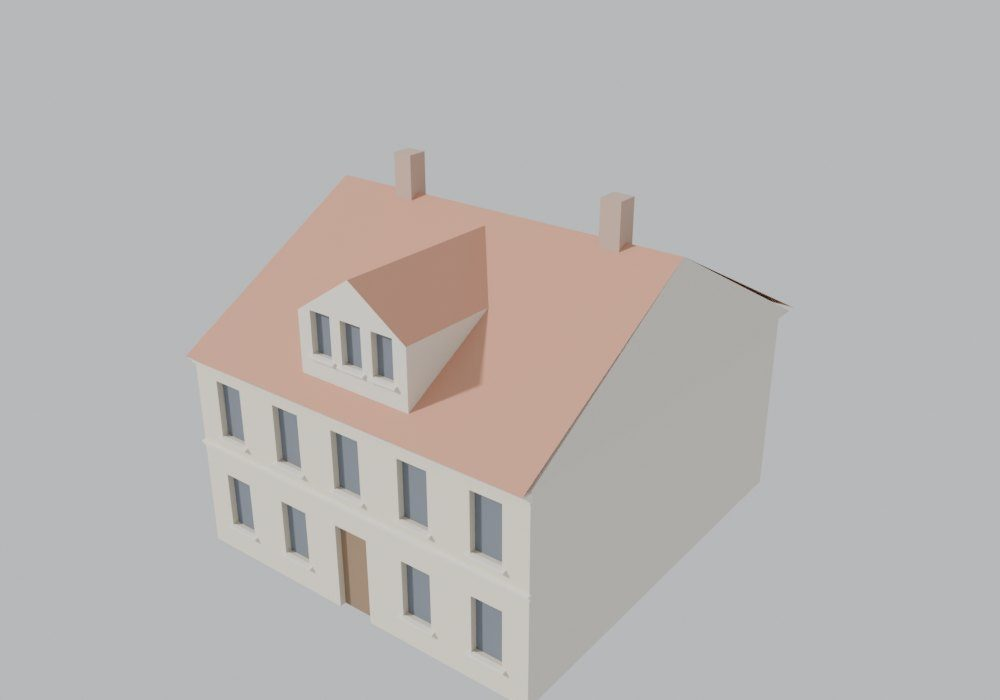
dům s velkým vikýřem
jižní strana · 9 příloh v databázi · revize r4
Codex: zablokováno, podklad FRONT je jen částečný
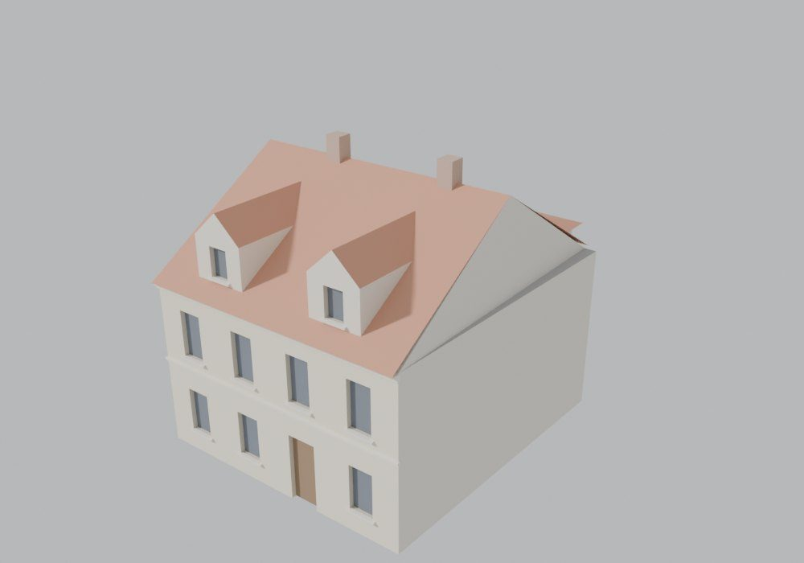
novostavba podle projektu 1908
jižní strana · 4 příloh v databázi · revize r6
zatím bez textur
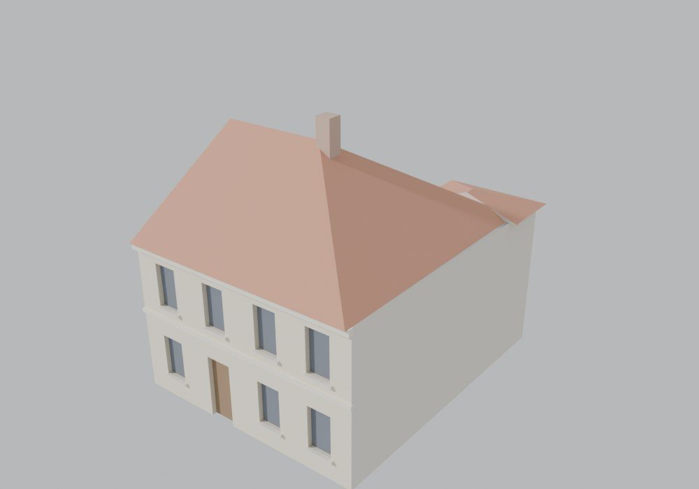
dům bez záznamu v databázi
jižní strana · 0 příloh v databázi · revize r1
zatím bez textur
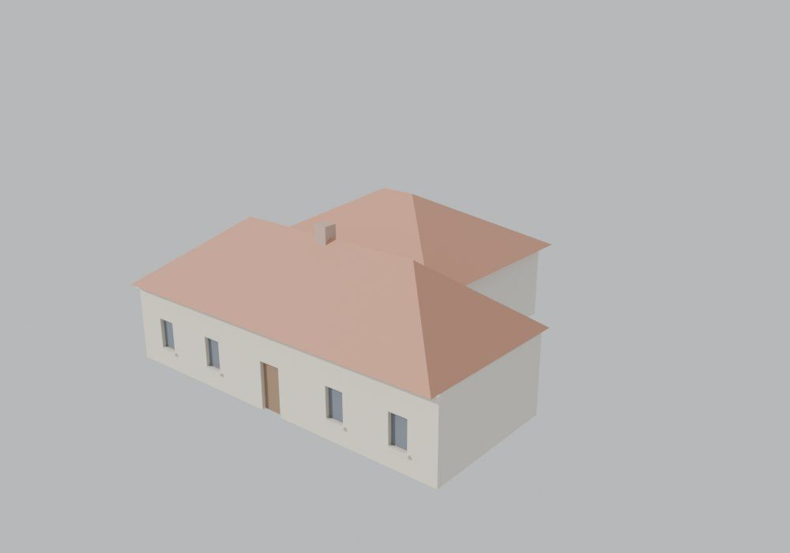
přízemní dům s valbou
jižní strana · 7 příloh v databázi · revize r3
zatím bez textur
Souhrnná tabulka
| Čp. | Strana | Typ | Podlaží | Průčelí × okap (m) | Ulice v GIS | Přílohy | Revize |
|---|---|---|---|---|---|---|---|
| 260 | severní | nárožní dům s arkýřem | 3 | 12,7 × 10,8 | Kulová | 11 | r5 |
| 261 | severní | dvoupodlažní dům s barokním vikýřem | 2 | 13,7 × 7,1 | Kulová | 11 | r5 |
| 262 | severní | dům Okresní nemocenské pokladny | 3 + půdní pás | 16,5 × 13,9 | Kulová | 24 | r6 |
| 263 | severní | nízký dvoupodlažní dům | 2 | 10,3 × 6,3 | Kulová | 16 | r3 |
| 264 | severní | úzký dům s vraty | 2 | 7,4 × 7,5 | Kulová | 8 | r2 |
| 111 | severní | Lutherhaus | 2 | 11,4 × 6,9 | Kulová | 7 | r6 |
| 265 | severní | tmavý dvoupodlažní dům | 2 | 15,2 × 6,9 | Kulová | 5 | r4 |
| 266 | severní | zdobený třípodlažní dům | 3 | 11,2 × 12,0 | Kulová | 5 | r4 |
| 267 | severní | nárožní dům s obchodem ZBRANĚ · STŘELIVO | 3 | 22,5 × 12,2 | Minoritů | 6 | r4 |
| 154 | jižní | dům do Školní (bez pramene) | 2 (hypotéza) | 11,5 × 7,0 | Školní | 2 | r2 |
| 259 | jižní | nárožní dům Kulová × Školní | 2 | 12,1 × 7,2 | Školní | 6 | r5 |
| 258 | jižní | dům s velkým vikýřem | 2 | 13,2 × 7,0 | Kulová | 9 | r4 |
| 1608 | jižní | novostavba podle projektu 1908 | 2 | 12,1 × 7,6 | Kulová | 4 | r6 |
| 1712 | jižní | dům bez záznamu v databázi | 2 (hypotéza) | 11,0 × 7,0 | Kulová | 0 | r1 |
| 257 | jižní | přízemní dům s valbou | 1 | 19,0 × 4,2 | Kulová | 7 | r3 |
Šířka průčelí je z GIS nebo z kótovaného plánu, výška okapu odhad z plánů a fotografií.
Textury (Codex)
Geometrie na této stránce je bez textur. Texturované domy připravuje Codex na kopiích těchto modelů a bude je doplňovat postupně: každý dům jako vlastní GLB v models/textured/ a záznam v data/textures.json. Prohlížeč ulice i domu pak sám nabídne povrch Textury (Codex) a texturované domy vloží na jejich místo v ulici; ostatní zůstanou geometrické. Postup je v návodu pro doplnění textur.
| Čp. | Revize geometrie | Stav textur (18. 10. 2026) |
|---|---|---|
| 260 | r5 | zatím bez textur |
| 261 | r5 | Codex: pracovní textury na starší geometrii, čeká na převázání na r5 |
| 262 | r6 | Codex: hotové na revizi r5 (vzhled schválen), čeká na převázání na r6 |
| 263 | r3 | zatím bez textur |
| 264 | r2 | zatím bez textur |
| 111 | r6 | Codex: pracovní textury na starší geometrii, čeká na převázání na r6 |
| 265 | r4 | zatím bez textur |
| 266 | r4 | zatím bez textur |
| 267 | r4 | zatím bez textur |
| 154 | r2 | zatím bez textur |
| 259 | r5 | zatím bez textur |
| 258 | r4 | Codex: zablokováno, podklad FRONT je jen částečný |
| 1608 | r6 | zatím bez textur |
| 1712 | r1 | zatím bez textur |
| 257 | r3 | zatím bez textur |
Rozpory a hypotézy
- Čp. 154 a 267. Karta ze schodů (kolem roku 1968) uvádí, že na prostranství vedle schodů „stály domky pod hradbami, počínaje čp. 154 + 267, zbořené okolo r. 1954“. GIS (plán 1938) klade 154 ke Školní, ale 267 na opačný konec ulice, na nároží s Minoritskou; tam ho určuje i porovnání šířek parcel s fotografií. Buď karta myslí jiné domy, nebo je identita 267 chybná. Nevyřešeno. Pokud platí karta, v hlavní epoše 60. let by 154 (a možná 267) už nestály.
- Čp. 1712 v databázi Libuše chybí. Existenci dokládá situace 1940 na listu
cp_262_005a text karty ze schodů, podobu nic. Struktura 1721, kterou databáze vede v oblasti Kulová, je jiný dům: projekt rodinného domku z roku 1930 na Vtelenské cestě, asi 1,5 km odtud. - Čp. 154 nemá žádný obrazový pramen; celý model je odhad podle GIS půdorysu.
- Čp. 258. Barevný FRONT uložený pod číslem 259 zobrazuje tento dům, ale jen vikýř, střechu a jednu řadu oken; přízemí a dveře v něm chybí.
- Čp. 1608 je modelován podle projektu z roku 1908. Realizaci zachycuje jen vzdálený snímek; vikýře projektu (dva velké se dvěma okny a malý vpravo) se od modelu liší a čekají na samostatnou opravu.
- Čp. 262. Projekt z 90. let 19. století a fotografie se liší v nadokenních motivech; model sleduje fotografii. Osy oken jsou o 0,1 až 0,3 m jinde než v projektu.
- Výšky a terén. Výšky podlaží a střech, hloubky říms a nik jsou odhady. Historický výškopis neexistuje; podélný sklon ulice je hypotéza.
- Půdorysy v GIS se překrývají u dvojic 265/266, 259/258 a 1608/1712. Model je ponechává, jak jsou.
- Epocha. Hlavní scéna odpovídá 60. letům; plakátový sloup doložený snímkem kolem roku 1900 je samostatný objekt.
Údaje jsou v datech označené jako model_hypothesis, status: provisional, locked: false.
Soubory ke stažení
- Celá ulice, GLB a Blender (bez zabalených obrázků)
- GLB jednotlivých domů jsou na jejich stránkách.
- Mapa „co kde stálo“, SVG
- Zpráva v Markdownu se seznamem pramenů všech domů a hashi příloh
- Přehled domů, JSON · Stav textur, JSON · Původ každého souboru tohoto webu

Rendery ulice
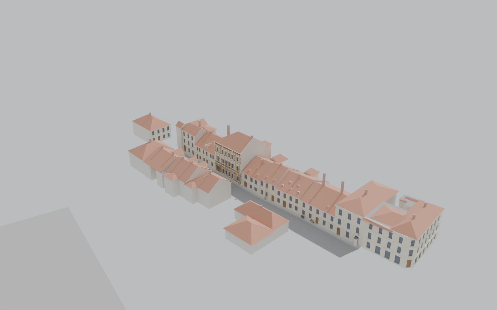
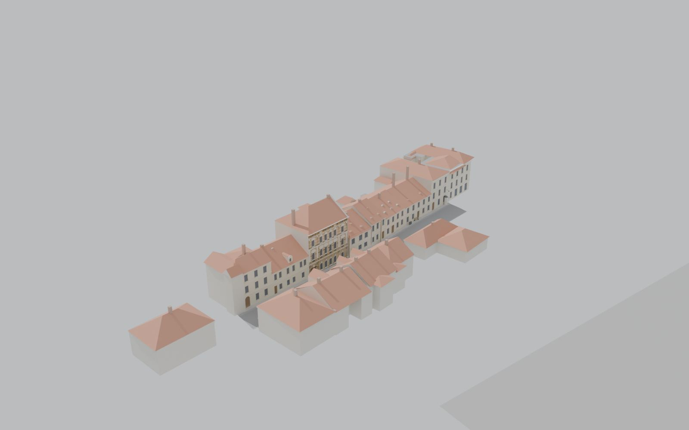
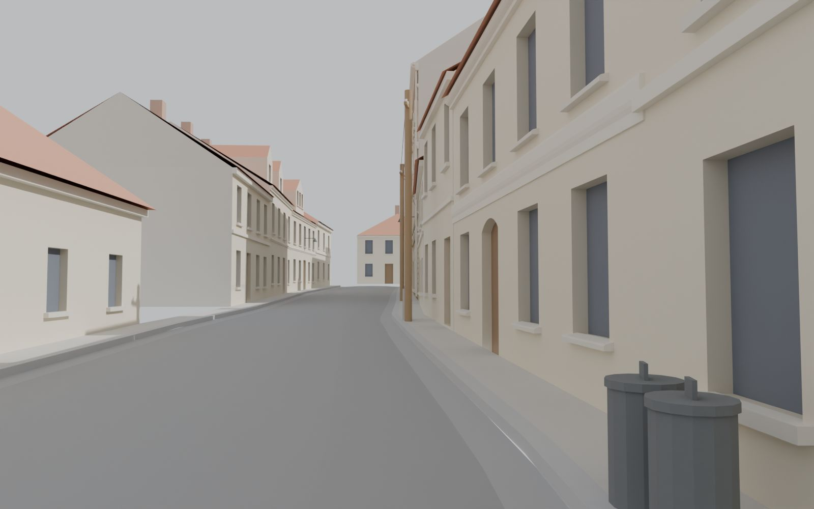
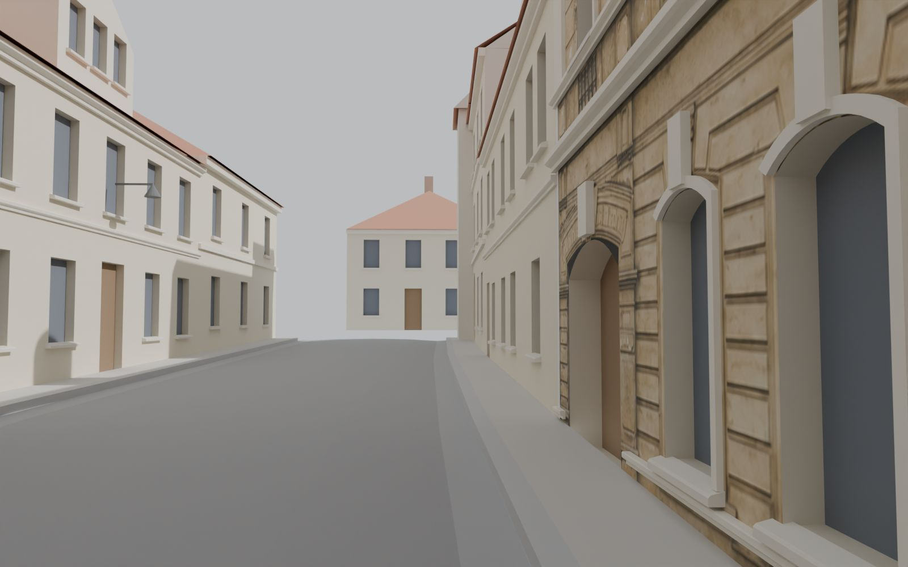
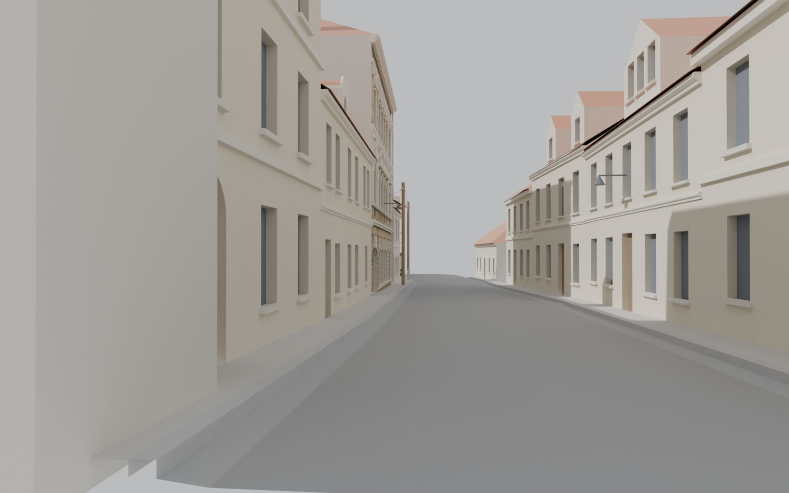
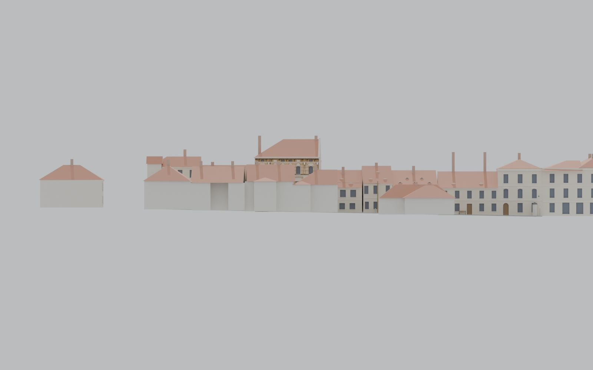
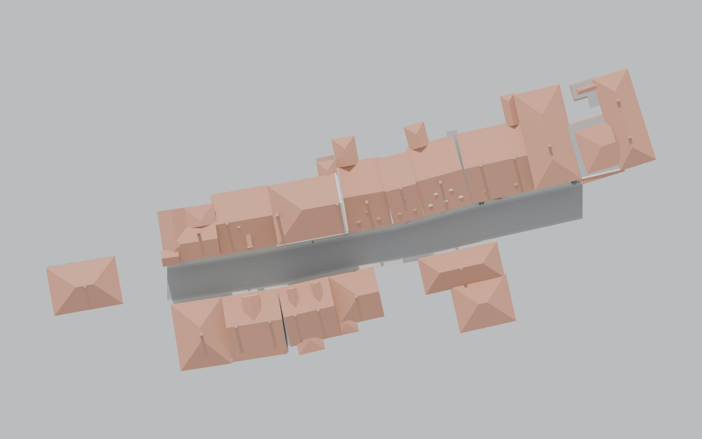
Starší samostatné studie domů
Před rekonstrukcí celé ulice vznikly podrobné studie jednotlivých domů s texturami a porovnáním variant (září až říjen 2026, jiný postup a starší identifikace domů východní části ulice). Zůstávají dostupné beze změny: